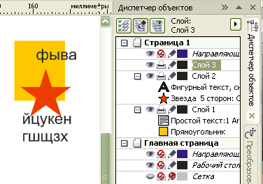
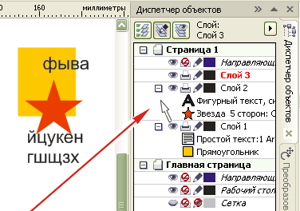
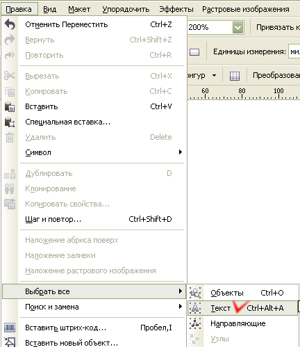
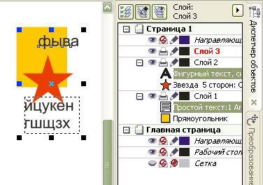
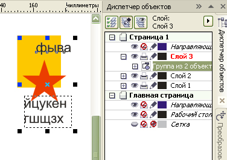
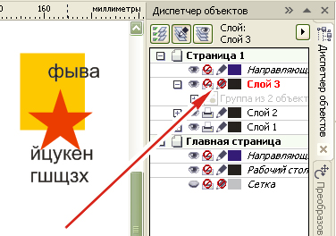

Помогите написать макрос
stacho / 09.07.2010, 22:09/00:41
Форум:
Дорогие друзья! )
Помогите мне пожалуйста с VBA кодом в кореле ... мне нужно чтобы он выделял всё, подчёркива- всё, кроме текста (не в кривых конечно)....
Не опытен в програмировании, бьюсь уже неделю...
За помощь заранее благодарен. :)
попробуй CTRL-A :D
изложи подробней как нужно выделять все - средствами Корела (рамочкой) или другим цветом и для чего выделять ?
Добавлено (12.07.2010, 10:15)
---------------------------------------------
а вообще попробуй такой код
Sub selectAll()Dim s As Shape
Dim sr As ShapeRange
ActiveDocument.ClearSelection
Set sr = ActivePage.Shapes.FindShapes
For Each s In sr
If s.Type <> cdrTextShape Then s.AddToSelection
Next s
End Sub
Спасибо, опробую...!!! :)
Это мне для изготовления монтажей к печати, дабы работа казалась раем! )
Есть макет, визитки, например. Пауэр клипы, градиенты, тени и дт. в изобилии.
Работаю обычно в Корел 12 и 14.
Надо этот макет выделить и растрировать, всё кроме текста. размножить и в печать!...
Вот и весь секрет. )
Я бы у вас не стал печать после такого :)
Уверяю качество не хуже, если всё оставить как есть. Темболее большую часть всёравно растрировать приходится, ибо слетает...!!!
stacho, да ладно, яж не клиент, не надо мне лечить что лучше растр или вектор на печати ;D Хотя опять же нужно посмотреть что там за печатная машина, может на ней и правда нет разницы :) Но это уже тема для отдельного разговора.
... а как Вы видите монтаж для печати, интересно ваше мнение...? )
stacho, это философский вопрос :) Соответственно об этом можно долго говорить, и уж точно давно вышли за пределы обсуждения текущей темы.
Помнится мне, тут кто то хотел поднять глобальную тему допечатной подготовки, но так ни кто и не поднял. Можешь создать, да и с себя сразу начать :) Мне бы и самому интересно было как на просторах нашей необъятной родины, да и не только, "готовят пирожки". Чует моя ... с этим делом очень туго как и со всем остальным...
stacho,
А что Вы понимаете под монтажом для печати?
Если словесных предупреждений не достаточно -- просто закрою тему. Создавайте отдельную тему про допечатку и философьте там.
stacho,
если вопрос смакросом не решен, предлагаю воспользоваться доступными средствами:
1. Создайте новый слой

2. Кликните курсором в указанном месте, чтобы снять выделение с названия слоя, но, чтобы он оставался активным.

3. Выделите весь текст (горячие кл. назначьте свои)

4. Вы видите, что текст выделился во всех слоях

5. Сгруппируйте, при этом группа автоматически переместится на новый слой, который оставался активным

6. Сделайте новый слой непечатаемым и нередактируемым.

7. Экспортируйте
Sancho,
Кстати.Растровое – не значит не печатное. В лазерных принтерах всё равно все векторные объекты растрируются в RIP-е, хотите Вы этого, или не хотите. Даже мелкие шрифты (размер 8-9), растрированные с разрешением 300 dpi, выглядят вполне нормально.
Страницы